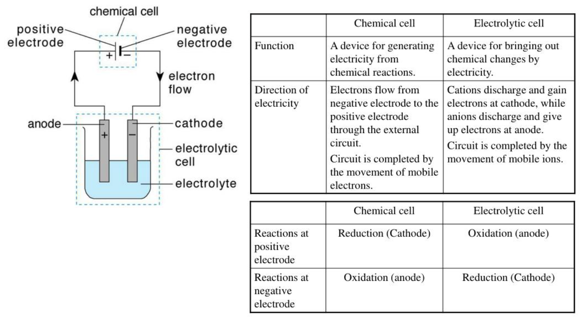
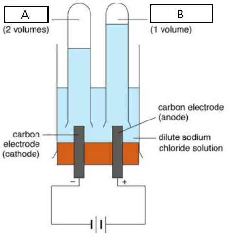

2021-07-24
Notes
Question 1
- A and B are gases that evolve from the electrolytic cell.
- Write down the name of A and B.
- Suggest a chemical test for A and B respectively.
- Write down the ionic half equations for the cathode and anode.
- The experiment is allowed to continue for a long period of time. Peter says that some new compounds other than A and B may be formed. Do you agree?
- Explain how electrolysis can distinguish dilute sodium chloride solution and dilute sodium iodide solution.
Question 2
Comment whether each of the following is true.
- Pure acids do not conduct electricity.
- If a compound is an electrolyte, it must conduct an electric current.
- Weak acids are weak because they are only sparingly soluble in water.
- Sodium chloride can dissolve in methanamide.
- To calculate the standard enthalpy of formation of sodium chloride, we can conduct an experiment to mix elemental sodium and chlorine together.
Question 3
Comment whether each of the following is a redox reaction.
- Fractional distillation.
- Photosynthesis.
- Reaction between butane and chlorine water.
- Reaction between propene and hydrogen gas.
- Reaction between concentrated sulphuric acid and sodium hydroxide.
Question 4
Write down the following.
- Functions of salt bridges.
- Functions of porous pot.
- Definition of electroplating.